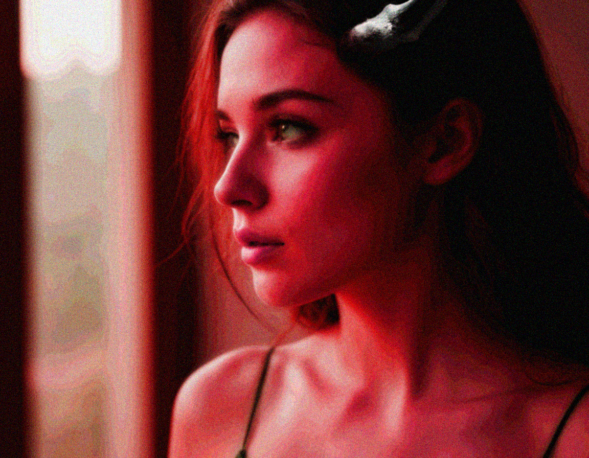

Cristie
Экспериментальный музыкант, композитор и дирижёр цифрового оркестра.
Послушать
Яндекс музыка
Яндекс музыкаYouTube Music
YouTube MusicСодержание
Знакомство
Привет! Я Cristie, экспериментальный музыкант и я просто люблю создавать музыку.
Спасибо что нашел время почитать про меня и проявил интерес. Для меня очень важно рассказать - кто я, зачем я все это делаю, как именно я это делаю, что я вкладываю в свои тексты, все, без купюр, я очень хочу быть прозрачной для тебя и показать что я чувствую.
Ну, что начнем наше знакомство? Как я уже сказала, я Cristie, но это не просто псевдоним, каждая буква отражает меня и имеет значение:
C - Catastrophic (Катастрофический)
R - Redemptive (Искупительный)
I - Infatuated (Страстно увлечённый)
S - Sacrificial (Жертвенный)
T - Tender (Нежный)
I - Immortal (Бессмертный)
E - Enchanting (Очаровательный)
Да, внутренние противоречия, это моя стихия, на этом построены мои тексты, в них я вкладываю свои чувства и эмоции.
Именно поэтому полный псевдоним Cristie Baltika Play Квин.
Прямая отсылка к иронии в одной из моих песен.
Прежде чем мы пойдем дальше, я обязана объяснить зачем я все это делаю.Моя философия
Для меня Cristie, больше чем имя, это путь, философия, и вот о чем она: когда-то я решила что мое главное кредо - не творить зло, нивилировать его влияние. Я стараюсь выражать это через музыку, ведь иногда чтобы остановить зло, нужно провалится в АД и возглавить его, любой ценой. Знаю, утопия, но это мой путь.
Путь через глубину текстов, через иронию и абсурд как защиту, через слезы и лирику - все это для того чтобы ты почувствовал.
А почувствовать со мной ты можешь разное, пережить травматичный опыт, погрустить, воодушевится и встать снова, посмеяться, улыбнуться, ощутить приятную ностальгию.
Я разная, я открыто это показываю, я не ограничиваюсь одним стилем, мне нравится многогранность.
И ещё самое главное, все это не про коммерцию, все что я делаю - просто так, как чувствую, как мне кажется правильным.
Мне важно через музыку передавать чувства и эмоции, дать возможность оказать поддержку кому-то, в любом формате.
О себе
Теперь наверное надо что-то рассказать о себе? Но знаешь, а что я могу рассказать?
Ты уже заметил что личность я многогранная и я бы сказала абсурдная сама по себе. Банально, но я человек, который борется с рутиной, в жизни возможно не такой интересный и не очень красивый. Это правда. Моя жизнь очень динамична, состоит из огромного кол-ва задач и увы, музыка занимает далеко не первое место. В жизни не видно кто я, на работе не покажешь, друзья не все поймут, а о том что я сейчас тут пишу, знает пара человек из моего окружения. Если я попробую описать себя, то первое что приходит на ум, это разбитый витраж, который как то склеили и получилось непонятно что. Я - противоречия, во мне играет чувство справедливости и огромная печаль к несовершенству этого мира.
Капелькой своей музыки я хочу сделать мир чуточку светлее, да это Сизифов труд, да это не возможно, но я буду это делать.
Наверное, если ты читал меня в тредс, ты заметил что я либо смешу, либо пишу что-то ободряющее, либо пресекаю любой буллинг и оскорбления. А последнего мне увы хватает, не хочу чтобы люди это транслировали другим.
У меня был длинный путь, полный веры, надежд и разочарований. Свой опыт и чувства я вкладываю в каждую строчку, как умею.
Знаете, для меня было очень важно получить от вас обратную связь о своей музыке, меня это очень вдохновляет и я верю что делаю это не зря.
И вот мы пришли к тому, что я инкогнито артист, не потому что я так хочу, а вопреки, в том числе чтобы не сделать больно близким, и да, увы, моя работа, не позволяет мне, скажем так светить свою личность, что уж скрывать.
Как я пишу тексты
Теперь мы плавно перейдем к творческой составляющей. Давай поговорим про тексты. Я пишу их по разному, как карта ляжет, если есть вдохновение могу сразу написать или за час, а если его нет, порой и неделя проходит. Я не придумываю тему заранее или специально, например под инфо повод. Обычно у меня просто щелкает, я записываю и либо сразу начинаю писать, либо шаг за шагом, пока не получится.
В моих текстах 3 языка - Русский, Английский и Японский. Первый я люблю больше всех, а на последнем обожаю делать отсылки в текстах, ну а Английский как клей между ними. Во всех моих текстах есть скрытый смысл, даже если они на вид ироничные и смешные, так я вижу мир и его отражение. А ещё между моими треками есть мост, они идут как книга, но это моя книга.
Тут наверное нужно уточнить, что для меня тексты - это не просто тексты, это мой терапевтический дневник, через него я конвертирую боль, эмоции в формат, который я могу передать и каждый услышит что-то для себя, что-то что откликнется. Да, я очень заморачиваюсь, и наверное со стороны это не видно. Также я специально не ставлю себе ограничений в формате, поэтому у меня есть треки по мотивам комиксов, треки с самоиронией, трешем и стебом (а как ещё показать абсурд в мире?), ну и мои серьезные, глубоко личные работы.
Что я слушаю и что меня вдохновляет
Наверное надо рассказать что я слушаю и что меня вдохновляет?
Я люблю разное, но вот мое любимое:
Alice in chains
Audioslave
Pearljam
Seether
Linkinpark
Pod
Korn
Stone sour
The Neighbourhood
Greenday
Rekevin
Disturbed
Rage agaist the machine
Rhcp
Massive attack
Rob zombie
Ledzeppelin
IDAI
Celldweller
Florence + the Machine
Foo Fighters
God Is An Astronaut
Godsmack
Ill Nino
Marilyn Manson
Nine Inch Nails
Oomph
Poe
Portishead
Queens Of The Stone Age
Shinedown
Silverchair
Soundgarden
Spineshank
Staind
Starset
The Cardigans
The Cranberries
The White Stripes
И это только часть.
А вдохновляет меня постоянное самокопание, мозгоедство и мир вокруг.
Создание музыки
Теперь наверное нужно про путь к музыке рассказать, как я к этому пришла вообще.
А пришла давно, много лет назад, тогда я записывала песни (вообще другие) под свою электрогитару и у меня ничего особо не получалось. Дело в том, что я жуткий перфекционист, это годами мне мешало.
Я просто не давала себе права начать, делать ошибки, ну и надо добавить что и самооценка тогда у меня была говно (спасибо добрым людям). В какой-то момент все сломалось, несколько раз, и честно, было вообще не до музыки, хоть я и очень люблю ее.
3 года назад произошла перезагрузка. Точнее давайте так, меня долго ломали, но не получилось, но получился тот вариант который хоть и сгорел, но стал как бы сам по себе, другой, который больше не хочет той боли. Да, внутри все перегорело, но это дало мне свободу, в том числе от себя прежней.
Я чётко поняла что я хочу выразить эту боль, возглавить этот поток и хоть это и зло, в каком то смысле, я конвертирую его во что-то хорошее, да глупо, да наивно, но я так решила. Так родились эти тексты, не сразу, особенно сложно то что я не считаю их идеальными, как и музыку.
Я поняла что моя жизнь просто не даёт мне возможности сделать все идеально. Моя ответственность перед близкими, моя работа, огромная ответственность, все это в каком-то смысле якорь. Но я люблю этот якорь и не могу и не хочу его бросить.
Тогда и начались первые эксперименты. Да, тексты были, но где взять музыку? Делать все вручную было бы непосильным трудом, я ещё и не терпеливый человек, стало ясно что то, как было раньше - больше не работает и никогда не работало. Позже мне попался проект АИгитарист, меня настолько поразили каверы голосом Летова, что мой рационализм и любопытство взяли верх, и я стала изучать как это было сделано. Оказалось что там использовался RVC. RVC - это инструмент, который позволяет улучшить и усилить мой собственный голос, чтобы он звучал чище и качественнее в треках. В отличие от нейросетей, создающих музыку с нуля (как Suno), он работает только с моим вокалом, как продвинутый фильтр для голоса. Я могу обучить его на своих лучших вокальных партиях, я могу обучать свой разный вокал, лирика, скрим, все что умею, а потом доводить до ума! Получается я пою сама, а потом усиливаю свой же вокал. Но, увы это не решало проблему с музыкой, битами и прочим..
Тут и начался первый путь экспериментов, и именно отсюда начинается глава - кринж Ютуба Да, именно так, канал был создан чтобы хоть что-то попробовать, а ещё я не считаю себя красивой (привет комплексы) - поэтому главная цель была просто что-то выложить. Свои тексты было страшно, да и кому они нужны (я тогда думала так). Поэтому я взяла каверы, сделала свою отстойную версию на IDAI и ещё пару песен. Музыку, я тогда делала в suno, да, такова правда, это был самый простой и быстрый инструмент на тот момент. Я долго выбирала именно нужный мне стиль звучания (чтоб тлен, красиво и не говно) и что-то начало получатся. Да, фидбэк был негативный, но я решила делать дальше, нацепляла красивый фильтр на рожу, чтоб хоть как-то себе нравится и продолжала. Так было до момента пока я не поняла что это очередной тупик. Suno даёт мне рамки, а не свободу, нужен был новый формат, но при этом быстрый и эффективный. И я придумала его и до сих пор его улучшаю. А что касается Ютуба, по нему сейчас четко видно мой путь, от черновиков до полноценных клипов. И даже цвета в роликах (от старых к новым) выбраны не случайно, они идут от светлых к темным, потом к красным, а потом к белому, мертвому лицу. Это не просто так, я показываю путь, что чем дальше, тем сильнее накал, и то что было - должно переродится. Даже всратый стиль роликов показывает что тот кого ты видишь - заперт в пузыре. Но если честно я разделяю свое творчество и то что было до, не считаю чем то достойным, это были скорее эмоциональные эксперименты, чем про музыку. Хотя я знаю что некоторым из вас нравятся эти каверы, хоть это и не совсем про меня. Про создание клипов будет чуть позже. Идём дальше.
Вернёмся к музыке. У Suno есть фича с продолжением звука, я взяла гитару и записала небольшую партию и отправила в ИИ, результат был неплох, вариации звучания были полезны и расширили мой кругозор.
Но, я поняла что можно пойти дальше. Я буду делать основные моменты сама, в DAW, но дальше, я буду делать из них лупы через suno , отбирать лучшее и склеивать их. Получается я ускорила создание семплов для daw, чтобы сбивать их. Но это прибавило проблем, вся эта кухня создаёт косяки в звуке. Я стала активнее изучать плагины и на помощь пришли izotope ozone и rx. Я стала убирать огрехи, щелчки, фоновые звуки и т.д. Итоговой точкой стало то, что я делаю композицию на 90% а потом делаю ее преобразование через remix suno Тут надо добавить что сам SUNO я скорее использую как дополнение к DAW, в его редакторе я убираю косяки ремикса, могу добавить инструменты. Сам ремикс уже редактируется дальше в DAW.
Получается вот как я создаю трек:
Пишу текст
Продумываю стиль и музыку
Делаю наброски битов в daw
Преобразую наброски в ИИ и делаю из них лупы
Сбиваю все это в композицию шаг за шагом
Получаю финал, делаю финальный ремикс инструментала в ИИ
Убираю все косяки плагинами
Создаю другой нейронкой фоновые звуки (шелест листьев, крики, выстрелы и тд)
Чищу их и добавляю в композицию
На готовый инструментал я пишу вокал
Как правило много партий, выбираю лучшую
Потом преобразовываю вокал через RVC
Комбинирую вокальные дорожки
Потом снова прогоняю вокал через плагины.
Дорожек вокала может быть и больше одной, на разных моделях RVC.
В итоге получается трек. Стоит ли оно того? Однозначно стоит - упарываясь, я могу сделать трек за неделю - полторы, а это очень быстро. Это именно то, что мне нужно.
Вы скажете что я извращенка, и да, вы правы, но это мой путь и моя свобода. Мне нравится мешать разные инструменты которые на первый взгляд не совместимые. А ещё это даёт мне свободу, я получаю много вариаций в процессе работы, я могу сразу понять что подходит, а что нет.
Наверное сейчас ты разочарован, понимаю, но это правда, я не идеальна, ни внешне, ни внутри, какая есть, это моя правда, мой выбор.
Вопрос об ИИ
Можно ли назвать меня ИИ? Я думаю нет. Я скорее гибрид, таких как я немного и у нас нет названия, но я считаю что за этим будущее.
И раз уж мы говорим про ИИ - тексты это не ИИ, это я, а в треке сбито и записано то, что я чувствую и как я вижу, разве важно как это сделано? Если ты послушал и что-то почувствовал, разве чувства не были настоящими? Это ли не эмоции? Значит правда? Или нет? Решать не мне.
Визуальное искусство
Ещё кое что. Личное, про внешность. Мне нравится рисовать себя, дело в том что моя работа связана с ИИ и я неплохо в этом разбираюсь (обучаю этих гадов) Поэтому арт, обложки и то как я себя позиционирую нарисовано в ИИ, да, но я специально обучила модельку (lora) на своём так сказать идеальном лице, как я хотела бы выглядеть, но увы не буду. Это мой способ воспроизвести внутреннюю красоту, да странный, но такой. И да, мой Инстаграм какое-то время (до того как я стала вести Threads) вел робот (как я уже говорила моя работа связана частично с ИИ и я пишу разных роботов) ,которого я создала. Я поняла что это не тот путь по которому я хочу развиваться и выключила его, хватит ему меня рисовать. Нет ценности в этих картинках и я думаю что скоро их просто удалю. Если честно мне тяжело даётся Инстаграм, не люблю я это дело. Поэтому скорее всего наведу там порядок, оставлю только мини клипы и те фотки, которые самой нравятся, которые я делаю сама. И кстати про аватарку (на bandlab и в описании альбома) - это отсылка к Шону Моргану из Seether, был у него фотосет в таких тонах.
Клипы
Давай теперь про клипы? Это важная часть, однажды я сделала песню Twins, это была спонтанная песня, текст просто пришел в голову. Я поняла что очень хочу ее визуализировать. Но мой прошлый формат совсем не подходил для этого. Я очень люблю хорроры и я решила что ради эксперимента, я попробую сделать клип. Это был первый опыт создания сценария, описания сцен, понимания какую картинку я хочу получить. Дальше встал вопрос выбора инструмента, им однозначно стал veo3 и несколько локальных нейронок (иначе как я себя перенесу в кадр), плюс Hailuo AI для продолжения сцен из поставленных статичных кадров. Статичные кадры я делаю в локальных Stable Diffusion и Flux, с Lora обученными на мне. Сцены делались долго, я училась писать промты как режиссер, чтобы veo3 понимал ракурсы, свет, сцену, композицию и не делал кашу. Потом все это я монтирую в видео редакторе, собираю воедино. У меня не было понимания что получится, и не было надежды что клип примут, но честно? Результат меня удивил, его очень хорошо приняли и 10тыс просмотров на старте были шоком. Я поняла что мне нравится процесс создания сцен, писать сценарий, по кусочкам воплощать идею в жизнь. Я однозначно хочу ещё и мой второй опыт на клип Russian Samurai доказал что я могу быть разноформатной и в клипах. А дальше я начала делать мини клипы, и хочу сделать их на часть треков альбома - В АД и без меня. Вообщем я не собираюсь останавливаться, но скажу честно, это сложно. Мой Ютуб впервые стал не кринжем, для меня это важно.
Самокритика
Я думаю это важно. Я не звезда и не стремилась ей быть. Мои тексты не уникальны, да, есть ребята намного талантливее меня, я это знаю. Инструментал? Разумеется есть к чему придраться, любой профи скажет что моя музыка проходная, я знаю это. Мой подход создания музыки - это хаос, структурированный, но хаос. Как меня понять и прочитать? Честно? Я сама не знаю. Но кое что я знаю точно.
Мои тексты помогают людям, ваши отзывы это прямое доказательство и я вам очень благодарна за это, правда.
И давайте, чтобы это подтвердить, просто вспомним про мое описание альбома - В АД и без меня - это и есть терапевтический дневник помогающий другим.
Описание альбома - В АД и без меня
Тут вы найдете мое описание альбома - В АД и без меня
Там я рассказываю о чем каждый трек и что я вложила в этот альбом
Лично, глубоко, мрачно..
Кто я?
Итого мы приходим к философской части вопроса, а кто я вообще?
Я бы сказала что я демон с обгоревшими крыльями ангела, которые ещё и оторвали а душу тупо стерли. Существую вопреки, так сказать. Можно ли сказать что моя музыка ИИ? Ну если я в нее вкладываю душу и создаю сама? Наверное нет? Свой вокал через ИИ? А в чем отличие от чистки вокала в daw или в автотюне? Да, я себя оцифровала, но мне это даже нравится. У меня есть в чем-то своя цифровая копия и даже не одна.
К чему веду, я уникальна, противоречива, даже в чем то невозможна - именно это и делает меня настоящей.
Прости если разочаровала, не ставила себе такой цели, просто таков мой путь.
Мой дорогой слушатель, если ты не испугался и ты все ещё здесь, поехали дальше.
Коллаборации
Делаешь ли ты коллабы?
Да! Но редко, и на своих условиях. Как я уже сказала, моя музыка не для всех и мне важно чтобы она отражала меня, поэтому я не пою и не пишу тексты под запрос - только если мы совпали и я хочу это создать. Но. Я всегда сохраняю свой стиль, это значит что я делаю полноценный трек, пишу текст, делаю биты и все, все, все и только потом, я даю это в руки второго музыканта, он может отредактировать трек, добавить свои части. Но основной трек всегда остаётся за мной - это мое правило, моя версия. Почти во всех коллабах, версии слабее моего оригинала, поэтому мне важно его сохранить. А ещё есть треки которые делались для коллаба, но не были приняты, и такое бывает.
Можно ли у тебя заказать текст или песню? Скорее нет чем да. Для меня музыка это творчество, я не представляю когда оно по запросу, это уже покупка, коммерция, а я про свободу. Я могу написать текст человеку, если я сама этого хочу, и я так иногда делаю. Тексты песен или стихи, да, вот такое бывает. У меня была мысль делать тексты в обмен на пожертвования в благотворительные фонды, но честно, я не знаю.
Канал YouTube
Канал YouTubeКлипы и визуальный контент
Instagram
Визуальные материалы
Threads
Мысли и общение
Bandlink
BandlinkМузыка и ссылки